第13章 数据存储结构

第12章研究了物理存储介质的特性，重点介绍磁盘和SSD，并说明如何利用RAID结构中的多个磁盘构建快速、可靠的存储系统。本章着重研究底层存储介质上的数据如何组织，以及如何访问这些数据。
13.1 数据库存储体系结构
持久数据保存在非易失性存储中，如第12章所述，通常采用磁盘或SSD。这两者都是块结构设备，数据以块为单位读取和写入。数据库处理的则是记录，记录通常远小于块，尽管某些记录也可能包含很大的属性。
大多数数据库利用操作系统文件作为存储记录的中间层，屏蔽底层块的一些细节。不过，为保证访问效率并支持故障恢复（见第19章），数据库仍然必须了解块的存在。因此，13.2节将结合块结构，研究如何在文件中保存单条记录。
给定一组记录，下一个问题是如何在文件结构中组织它们，例如按排序顺序、创建顺序或任意顺序存放。13.3节研究几种不同的文件组织方式。
13.4节介绍数据库如何在数据字典中组织关系模式及存储组织信息。这些信息对许多任务都很重要，例如根据关系名定位并读取该关系的记录。
CPU只能访问主存中的数据，而持久数据必须保存在磁盘或SSD等非易失性存储中。数据库通常大于主存，因此必须从非易失性存储获取数据，更新后还要保存回去。13.5节介绍数据库如何利用称为数据库缓冲区的一块内存，保存从非易失性存储读出的块。
将同一列的所有值集中存放，对分析型查询处理效果很好；这种布局与将同一行的所有属性集中存放不同，称为面向列的存储。13.6节将介绍这一思想。
有些应用需要很快的数据访问速度，同时数据量足够小，整个数据库可以放入数据库服务器的主存。此时，可以在内存中保留整个数据库的一份副本。1 将整个数据库保存在内存中，并针对数据常驻内存的特点优化内存数据结构、查询处理及其他算法的数据库，称为内存数据库。13.7节讨论内存数据库的存储组织。目前正在开发一种允许直接访问单个字节或高速缓存行的非易失性内存，称为存储级内存。内存数据库体系结构可以针对这类存储进一步优化。
13.2 文件组织
数据库映射到若干由底层操作系统维护的文件，这些文件永久保存在磁盘上。一个文件在逻辑上组织为记录序列，记录再映射到磁盘块。文件是操作系统提供的基本结构，因此这里假设底层文件系统已经存在。我们需要考虑如何用文件表示逻辑数据模型。
每个文件在逻辑上还划分为定长的存储单位，称为块。块既是存储分配单位，也是数据传输单位。大多数数据库默认使用4到8KB的块，但许多数据库允许在创建实例时指定块大小。某些数据库应用适合使用较大的块。
一个块可以包含多条记录，具体包含哪些记录取决于采用的物理数据组织方式。这里假设任何记录都不大于一个块，这对大学数据库等大多数数据处理应用是合理的。图像等一些大型数据项确实可能远大于一个块。13.2.2节将简要讨论如何单独存储这些大型数据项，并在记录中保存指向数据项的指针。
译注：原书此处指向13.2.2节；大对象的专门讨论实际位于13.2.3节。
此外，我们要求每条记录完整地位于单个块内，不能一部分在一个块中，另一部分在另一个块中。这一限制能够简化数据项访问，并提高访问速度。
关系数据库中，不同关系的元组通常大小不同。将数据库映射到文件的一种方法是使用多个文件，每个文件只保存某一种固定长度的记录。另一种方法是让文件能够容纳多种长度的记录。不过，定长记录文件比变长记录文件更容易实现，前者采用的许多技术也适用于后者。因此，我们先讨论定长记录文件，再介绍变长记录的存储。
13.2.1 定长记录
以大学数据库中保存instructor记录的文件为例，每条记录用伪代码定义如下：
type instructor = record
ID varchar(5);
name varchar(20);
dept_name varchar(20);
salary numeric(8,2);
end
假设每个字符占1字节，numeric(8,2)占8字节。为ID、name和dept_name属性分配各自能够容纳的最大字节数，而不按实际值分配可变数量的字节，则一条instructor记录长53字节。简单的做法是：前53字节存第一条记录，接着53字节存第二条，依此类推，如图13.1所示。
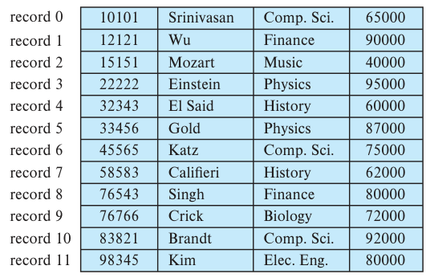
图13.1 包含instructor记录的文件。record 0至record 11表示记录0至记录11；各列依次是ID、姓名、系名和工资。
不过，这种简单方法有两个问题。
- 除非块大小恰好是53的倍数，这种情况不太可能，否则某些记录会跨越块边界，一部分存于一个块，另一部分存于另一个块。读写这种记录需要访问两个块。
- 从这种结构中删除记录比较困难。要么用文件中的另一条记录填补被删除记录的空间，要么提供一种标记已删除记录的方法，使其能够被忽略。
为避免第一个问题，每个块只分配能够完整放入其中的记录数量：用块大小除以记录大小，再舍去小数部分即可算出。块中剩余的字节闲置。
删除记录时，可以将其后一条记录移入空出的位置，再依次移动后续记录，直到被删除记录之后的所有记录都前移，如图13.2所示。但这样需要移动大量记录。更简单的做法可能是只将文件的最后一条记录移入空出的位置，如图13.3所示。
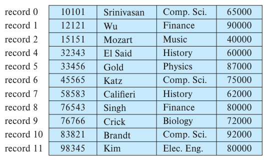
图13.2 删除图13.1中的记录3，并移动所有后续记录后的文件。
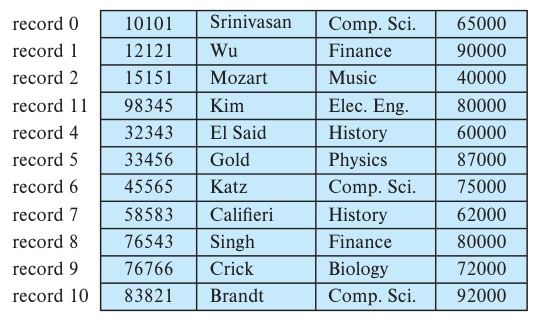
图13.3 删除图13.1中的记录3，并将最后一条记录移入其位置后的文件。
移动记录以填补删除留下的空间并不理想，因为会增加块访问。通常插入比删除更频繁，因此可以暂时保留删除后空出的空间，等以后插入时再使用。仅在已删除记录上加一个简单标记还不够，因为插入时很难找到这些可用空间，必须引入额外结构。
在文件开头分配一定数量的字节作为文件头，用来保存文件的各种信息。当前只需保存第一条已删除记录的地址，再用这条记录的位置保存第二条可用记录的地址，依此类推。这些地址指向记录的位置，因此可以直观地看作指针。已删除记录由此形成一个链表，通常称为空闲链表（free list）。图13.4展示图13.1的文件删除记录1、4、6后形成的空闲链表。
插入新记录时，使用文件头所指向的位置，再将文件头指针改为指向下一条可用记录。如果没有可用空间，就把新记录追加到文件末尾。
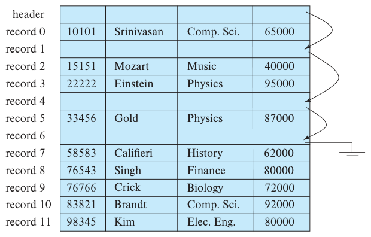
图13.4 图13.1的文件删除记录1、4、6后的空闲链表。header表示文件头。
定长记录文件的插入和删除容易实现，因为删除一条记录释放的空间，恰好够插入一条新记录。允许变长记录后，这种对应关系就不再满足：新记录可能放不进删除留下的空间，也可能只占其中一部分。
13.2.2 变长记录
数据库中出现变长记录有多种原因，最常见的是字符串等变长字段。其他原因包括记录类型包含数组或多重集等重复字段，以及同一文件中存在多种记录类型。
实现变长记录有不同方法，但每种方法都必须解决两个问题。
- 如何表示单条记录，使各个属性即使长度可变，也能方便地提取。
- 如何将变长记录放入块中，使块内记录能够方便地提取。
包含变长属性的记录通常分为两部分：开头是定长信息部分，同一关系的所有记录在这一部分具有相同结构；其后是变长属性的内容。数值、日期、定长字符串等定长属性，分配恰好能够保存其值的字节数。varchar等变长属性，在记录开头用一个二元组(offset, length)表示：offset表示该属性数据在记录中的起始位置，length表示属性值的字节长度。变长属性的值依次连续保存在定长部分之后。这样，无论属性本身是定长还是变长，记录开头为每个属性保存的信息大小都是固定的。
图13.5展示了这种表示方法：一条instructor记录的前三个属性ID、name、dept_name为变长字符串，第四个属性salary为定长数值。假设偏移量和长度各占2字节，每个属性合计占4字节；salary占8字节；每个字符串占用的字节数等于字符数。
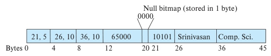
图13.5 instructor关系中一条变长记录的表示。Bytes表示字节位置，Null bitmap表示占用1字节的空值位图。
图中还展示了空值位图（null bitmap），用于表示记录中哪些属性为null。对于该记录，若salary为null，就将位图的第4位设为1，并忽略字节12到19中保存的salary值。记录只有4个属性，因此空值位图用1字节即可容纳；属性更多时，可能需要更多字节。有些表示方法将空值位图放在记录开头，对null属性完全不保存数据，包括属性值或偏移量与长度。这能节省存储空间，但提取属性时需要额外工作。对于字段很多、其中多数为null的应用，这种表示尤其有用。
接着考虑如何在一个块内保存变长记录。常用的是图13.6所示的槽页（slotted-page）结构。2 每个块开头都有一个块头，包含以下信息：
- 块头中的记录条目数量。
- 块内空闲空间的末端位置。
- 一个数组，每个条目保存相应记录的位置和大小。
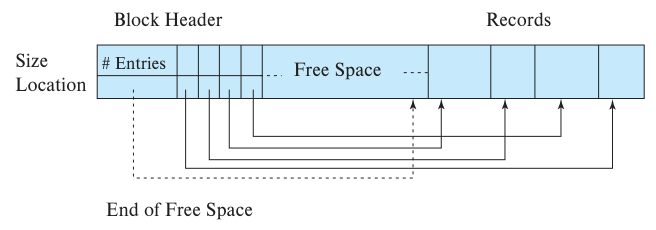
图13.6 槽页结构。Block Header为块头，# Entries为条目数，Size与Location为记录大小和位置，Records为记录，Free Space为空闲空间，End of Free Space为空闲空间末端。
实际记录从块的末尾开始连续分配。块头数组最后一个条目与第一条记录之间，是一整段连续空闲空间。插入记录时，在空闲空间末端分配位置，并在块头中增加一个保存记录大小和位置的条目。
删除记录时，释放其占用的空间，将对应条目标记为已删除，例如将大小设为−1。然后移动块中位于被删除记录之前的记录，填补删除释放的空间，使所有空闲空间重新集中在块头数组最后一个条目与第一条记录之间。块头中的空闲空间末端指针也相应更新。只要块内还有空间，就可以采用类似技术扩大或缩小记录。由于块大小有限，典型值约4到8KB，移动记录的成本并不高。
槽页结构要求指针不能直接指向记录，必须指向块头中保存记录实际位置的条目。通过这一层间接寻址，可以在支持记录间接指针的同时移动记录，避免块内空间碎片。
13.2.3 大对象存储
数据库经常保存远大于一个磁盘块的数据。例如，一张图像或一段录音可能有数MB，一个视频对象可能有数GB。回顾SQL中的blob和clob类型，它们分别用于保存二进制大对象和字符大对象。
许多数据库在内部要求记录大小不超过一个块。3 它们允许记录在逻辑上包含大对象，但将大对象与该记录的其他较短属性分开存放，在记录中保存指向大对象的逻辑指针。
大对象可以作为文件保存在数据库管理的文件系统区域，也可以作为由数据库保存和管理的文件结构。在后一种情况下，数据库内部的大对象可以采用14.4.1节将介绍的B⁺树文件组织，以便高效访问对象内任意位置。B⁺树文件组织支持读取整个对象或指定字节范围，也支持插入和删除对象的部分内容。
不过，在数据库中保存很大的对象会带来一些性能问题。一是通过数据库接口访问大对象的效率；二是数据库备份的大小。许多企业定期生成数据库转储，即数据库的备份副本。将大对象存入数据库，可能使转储文件的体积大幅增加。
因此，许多应用选择把视频等很大的对象保存在数据库之外的文件系统中，再把文件名，通常是文件系统路径，作为数据库记录的一个属性。将数据保存在库外文件中，可能使数据库中的文件名指向不存在的文件，例如文件已被删除，这相当于某种外键约束违反。此外，数据库的授权控制不适用于文件系统中的这些数据。
有些数据库支持与文件系统集成，以保证约束得到满足，例如当数据库中存在指向文件的指针时，阻止删除该文件，并保证访问授权得到执行。文件既可以通过文件系统接口访问，也可以通过数据库SQL接口访问。例如，Oracle通过SecureFiles和Database File System功能提供这种集成。
13.3 文件中的记录组织
前面研究了记录如何表示在文件结构中。关系是一组记录，接下来的问题是如何在文件中组织这组记录。可采用的方式包括以下几种。
- 堆文件组织。记录可以放在文件中任何足以容纳它的位置，记录之间没有顺序。每个关系通常对应一个文件或一组文件。13.3.1节将介绍这种组织。
- 顺序文件组织。记录按照某个搜索码的值顺序存放，见13.3.2节。
- 多表聚簇文件组织。通常每个关系使用独立文件或文件集保存记录。多表聚簇则将多个关系的记录存入同一文件，甚至同一块，以降低某些连接操作的成本，见13.3.3节。
- B⁺树文件组织。13.3.2节介绍的传统顺序文件，即使存在可能改变记录顺序的插入、删除、更新操作，也能够支持有序访问；但这些操作大量发生时，有序访问效率会下降。14.4.1节介绍另一种组织方式：B⁺树文件组织。它与该章的B⁺树索引结构有关，即使存在大量插入、删除和更新，也能高效地有序访问记录。此外，它还能根据搜索码高效访问特定记录。
- 散列文件组织。对每条记录的某个属性计算散列函数，结果决定记录应放入文件的哪个块。14.5节介绍这一组织，它与该章的索引结构密切相关。
13.3.1 堆文件组织
堆文件组织允许记录存放在该关系文件中的任意位置。一旦放入某个位置，通常就不再移动。4
插入记录时，可以总是将其追加到文件末尾。不过，如果已有记录被删除，就应利用释放的空间保存新记录。数据库系统必须能够高效找到有空闲空间的块，避免顺序扫描文件的所有块。
大多数数据库使用一种空间开销很小的数据结构——空闲空间映射（free-space map），跟踪哪些块仍有空间保存记录。它通常表示为数组，关系中的每个块对应一个条目。每个条目表示一个比例f，保证对应块至少有f比例的空间空闲。例如，PostgreSQL每个条目占1字节，条目值除以256就得到空闲空间比例。数组保存在文件中，需要时将相应块读入内存。5 每当记录被插入、删除或改变大小，若空间占用比例的变化足以影响条目值，就更新映射中的对应条目。下例是包含16个块的文件的空闲空间映射。假设用3个比特记录比例，则位置i的值除以8，就得到块i的空闲空间比例。
4 2 1 4 7 3 6 5 1 2 0 1 1 0 5 6
例如，值为7表示该块至少有7/8的空间空闲。
为了给指定大小的新记录找到存储块，数据库可以扫描空闲空间映射，寻找有足够空间的块。如果找不到，就为关系分配一个新块。
虽然扫描映射比实际读取各块来寻找空闲空间快得多，但文件很大时仍可能很慢。为进一步加速，可以建立第二级空闲空间映射，例如让第二级的一个条目对应主映射中的100个条目，并保存这100个条目的最大值。下例是上述映射的第二级，每个条目对应主映射中的4个条目。
4 7 2 6
如果第二级的一个条目对应主映射的100个条目，扫描第二级只需扫描主映射所用时间的1/100。找到表示空闲空间足够的条目后，再检查它对应的100个主映射条目，就可以找到有足够空间的块。这样的块一定存在，因为第二级保存的是对应主映射条目的最大值。对于很大的关系，可以按同样思路在第二级之上继续增加层次。
每次更新映射条目都将映射写入磁盘，开销会很大，因此通常定期写入。磁盘上的映射可能过时，数据库启动时取得的空闲空间信息也可能不准确。映射可能声称某个块有空闲空间，但实际上没有；读取该块后即可发现错误，再搜索映射，寻找其他块。映射也可能声称某个块没有空闲空间，而实际上有；一般而言，这只会使部分空闲空间未被利用。为修正这类错误，系统定期扫描关系，重新计算空闲空间映射并写入磁盘。
13.3.2 顺序文件组织
顺序文件用于按某个搜索码的排序顺序高效处理记录。搜索码可以是任意属性或属性集，无须是主码，甚至无须是超码。为快速按搜索码顺序读取记录，用指针将记录串成链表，每条记录的指针指向搜索码顺序中的下一条记录。此外，为减少顺序处理中的块访问次数，记录在物理上也按搜索码顺序存放，或尽量接近这一顺序。
图13.7展示大学示例中instructor记录的顺序文件，采用ID作为搜索码，记录按ID顺序保存。
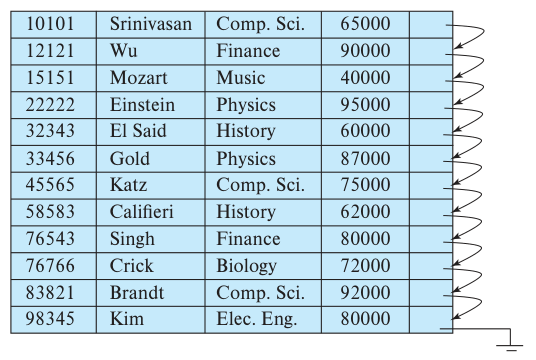
图13.7 instructor记录的顺序文件。
顺序文件允许按排序顺序读取记录，既便于展示，也适用于第15章将介绍的某些查询处理算法。
不过，在记录插入和删除时维持物理顺序比较困难，因为一次插入或删除若引起大量记录移动，成本会很高。删除可以像前面那样用指针链处理。插入则遵循以下规则：
- 在文件中找到按搜索码顺序位于新记录之前的那条记录。
- 如果该记录所在块中有空闲记录位置，即删除留下的空间，就把新记录插在那里；否则，将其插入溢出块。无论哪种情况，都要调整指针，使记录按搜索码顺序连接。
图13.8展示图13.7的文件插入记录(32222, Verdi, Music, 48000)后的状态。这种结构可以快速插入新记录，但顺序文件处理应用必须按照不同于记录物理顺序的次序访问记录。
需要放入溢出块的记录较少时，这种方法效果良好。不过，经过一段时间，搜索码顺序与物理顺序之间的对应关系可能完全消失，使顺序处理效率大幅下降。此时应重新组织文件，让它在物理上再次按顺序排列。重组成本很高，必须在系统负载较低时执行。重组频率取决于新记录的插入频率。在几乎没有插入的极端情况下，可以始终保持文件的物理有序性，此时图13.7中的指针字段就不再需要。
14.4.1节介绍的B⁺树文件组织即使有大量插入、删除和更新，也能提供高效的有序访问，无须昂贵的重组。
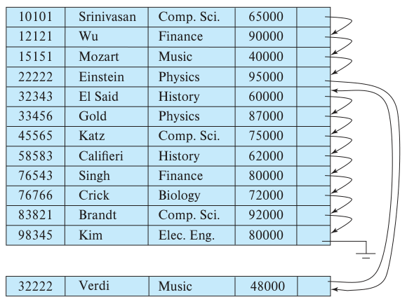
图13.8 插入记录后的顺序文件。
13.3.3 多表聚簇文件组织
大多数关系数据库系统为每个关系使用独立文件或文件集。因此，在这种设计中，每个文件，以及文件中的每个块，都只保存一个关系的记录。
不过，某些情况下，在同一个块中保存多个关系的记录会有好处。考虑大学数据库上的查询：
select dept_name, building, budget, ID, name, salary
from department natural join instructor;
该查询计算department与instructor的连接。因此，对每个department元组，系统必须找到dept_name相同的instructor元组。理想情况下，可以借助第14章介绍的索引定位这些记录。不过，无论怎样定位，都必须将它们从磁盘传入主存。最坏情况下，每条记录位于不同块中，查询需要的每条记录都要单独读取一个块。
具体来看，图13.9和图13.10分别给出department和instructor关系，为简洁起见，只列出前面使用过的部分元组。图13.11的文件结构用于高效执行department与instructor自然连接的查询。某个dept_name对应的所有instructor元组，都放在该系的department元组附近。称这两个关系按dept_name聚簇。假设每条记录都包含所属关系的标识符，虽然图13.11没有画出。
| dept_name | building | budget |
|---|---|---|
| Comp. Sci. | Taylor | 100000 |
| Physics | Watson | 70000 |
图13.9 department关系。
| ID | name | dept_name | salary |
|---|---|---|---|
| 10101 | Srinivasan | Comp. Sci. | 65000 |
| 33456 | Gold | Physics | 87000 |
| 45565 | Katz | Comp. Sci. | 75000 |
| 83821 | Brandt | Comp. Sci. | 92000 |
图13.10 instructor关系。
图中没有画出的一种优化，是对来自两个关系的一组元组，只保存一次定义聚簇的dept_name属性值，以减少存储开销。
这种结构可以高效处理连接。读取一个department元组时，它所在的整个块都会从磁盘复制到主存。对应的instructor元组在磁盘上放在该department元组附近，因此读入的块也包含查询所需的instructor元组。如果某个系的教师很多，一个块放不下全部instructor记录，其余记录则放在附近的块中。
多表聚簇文件组织，就是图13.11这样在每个块中保存两个或更多关系的相关记录的组织方式。6
聚簇码是决定哪些记录一起存放的属性。在前面的例子中，聚簇码是dept_name。
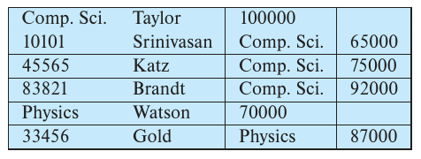
图13.11 多表聚簇文件结构。
多表聚簇能够加快某些连接查询，但可能减慢其他类型的查询。例如，在上述布局中：
select *
from department;
需要访问的块比每个关系分别存入独立文件时更多，因为每个块中的department记录明显减少。为了高效定位某个块内所有department元组，可以用指针将该关系的所有记录连接起来，但这种链表不会改变需要读取的块数。
是否采用多表聚簇，取决于数据库设计者预计哪些查询最常出现。合理使用多表聚簇可以显著提高查询处理性能。
Oracle支持多表聚簇。可以用create cluster命令建立聚簇并指定聚簇码，再通过扩展的create table命令，指定某个关系保存到特定聚簇中，并以某个属性作为聚簇码。这样可以将多个关系分配到同一聚簇。
13.3.4 分区
许多数据库允许将一个关系的记录划分为若干较小的关系，分别存放。这种表分区通常依据某个属性值。例如，会计数据库的transaction关系可以按年份划分为transaction_2018、transaction_2019等较小关系。查询仍然基于transaction编写，但会转换为针对各年度关系的查询。大多数访问针对当年记录，并包含按年份选择的条件。查询优化器可以改写这类查询，只访问所需年份的小关系，跳过其他年份记录。例如：
select *
from transaction
where year=2019
只访问transaction_2019，忽略其他关系；不含该选择条件的查询则读取全部关系。
为记录寻找空闲空间等操作，其成本随关系大小增加。分区缩小了每个关系，有助于降低这些开销。分区还可以将关系的不同部分保存到不同存储设备。例如在2019年，可以把访问较少的transaction_2018及更早年份的交易保存到磁盘，将transaction_2019保存到SSD，以加快访问。
13.4 数据字典的存储
到目前为止，我们只讨论了关系本身的表示。关系数据库系统还需要维护关于关系的数据，例如关系模式。通常，这类“关于数据的数据”称为元数据。
关系模式及其他关系元数据保存在称为数据字典或系统目录的结构中。系统必须保存的信息包括：
- 关系名称。
- 每个关系的属性名称。
- 属性的域和长度。
- 数据库中定义的视图名称及其定义。
- 完整性约束，例如码约束。
许多系统还保存以下用户数据：
- 用户名、用户的默认模式，以及口令或其他身份验证信息。
- 每个用户的授权信息。
此外，数据库可以保存关系和属性的统计与描述性数据，例如每个关系的元组数、每个属性的不同值数量。
数据字典还可能记录关系采用的存储组织，例如堆、顺序或散列，以及各关系的存储位置：
- 若关系保存在操作系统文件中，字典记录保存每个关系的一个或多个文件名。
- 若数据库将全部关系保存在单个文件中，字典可以用链表等数据结构，记录哪些块包含各关系的记录。
第14章介绍索引时，还会看到需要为每个关系上的每个索引保存以下信息：
- 索引名称。
- 被索引的关系名称。
- 定义索引的属性。
- 索引类型。
这些元数据实际上构成一个小型数据库。有些数据库系统使用专用数据结构和代码存储元数据。一般更适合将其保存为数据库自身的关系。这样既能简化系统整体结构，也能利用数据库的全部能力快速访问系统数据。
如何用关系表示系统元数据，具体由系统设计者决定。图13.12给出一个简化数据字典的模式图，保存前述部分信息。它仅用于示例，实际实现保存的信息远多于图中所示。可以阅读所用数据库的手册，了解它维护哪些系统元数据。
在图中的元数据表示中，假设Index_metadata关系的index_attributes属性包含一个或多个属性的列表，可以用“dept_name, building”这样的字符串表示。因此，Index_metadata不满足第一范式。虽然可以对其规范化，但图中的表示可能访问效率更高。数据字典经常以非规范化形式保存，以实现快速访问。
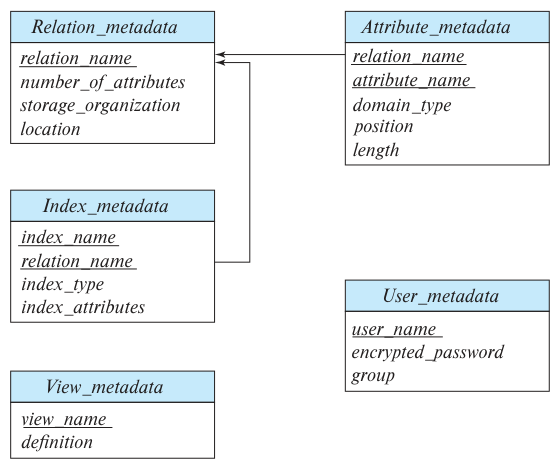
图13.12 表示部分系统元数据的关系模式。Relation_metadata保存关系名、属性数、存储组织和位置；Attribute_metadata保存关系名、属性名、域类型、位置和长度；Index_metadata保存索引名、关系名、索引类型及索引属性；View_metadata保存视图名和定义；User_metadata保存用户名、加密口令和用户组。
数据库系统要读取某个关系的记录，必须先查询Relation_metadata，找到该关系的位置和存储组织，再根据这些信息获取记录。
Relation_metadata自身的位置和存储组织必须记录在其他地方，例如数据库代码中或数据库的固定位置，因为系统需要先知道这些信息，才能找到Relation_metadata的内容。
系统元数据访问频繁，因此大多数数据库会在启动阶段、处理查询之前，将其读入能够高效访问的内存数据结构。
13.5 数据库缓冲区
多年来，服务器主存容量大幅增加，许多中等规模数据库已经能够完全放入内存。不过，服务器中的多种任务都需要内存，即使数据库规模适中，分配给数据库的内存也可能远小于数据库本身。许多大型数据库则远大于服务器可用内存。
因此，即使现在，大多数数据库的数据仍主要保存在磁盘上，读写前必须先将数据载入内存，更新后的块随后再写回磁盘。
磁盘访问远慢于内存访问，数据库系统的一个主要目标就是尽量减少磁盘与内存之间的块传输。减少磁盘访问的一种办法，是在主存中保留尽可能多的块，提高访问时块已在主存中的概率，从而避免访问磁盘。
由于无法将所有块都保留在主存中，需要管理可用于保存块的内存空间。缓冲区是主存中用于保存磁盘块副本的部分。每个块在磁盘上始终有一个副本，不过它的版本可能早于缓冲区中的版本。负责分配缓冲空间的子系统称为缓冲区管理器。
13.5.1 缓冲区管理器
数据库程序需要磁盘块时，会向缓冲区管理器发出请求，即调用。如果块已经位于缓冲区，管理器直接将它在主存中的地址返回给请求者。若不在缓冲区，管理器先分配空间；必要时移出另一个块，为新块腾出位置。只有被移出的块自上次写入磁盘以来发生过修改，才需要写回。随后，管理器将请求块从磁盘读入缓冲区，返回其主存地址。这些内部操作对发出磁盘块请求的程序是透明的。
熟悉操作系统的读者会发现，缓冲区管理器看起来很像大多数操作系统中的虚拟内存管理器。区别之一是数据库可能大于机器硬件地址空间，内存地址不足以寻址全部磁盘块。此外，为了更好地服务数据库系统，缓冲区管理器需要比典型虚拟内存管理方案更复杂的技术。
13.5.1.1 缓冲区替换策略
缓冲区没有剩余空间时，必须先驱逐，即移出一个块，才能读入新块。大多数操作系统采用最近最少使用（least recently used，LRU）方案，将距上次访问时间最久的块写回磁盘并移出缓冲区。对于数据库应用，可以进一步改进这种简单策略，见13.5.2节。
13.5.1.2 固定的块
块读入缓冲区后，数据库进程可以从缓冲内存读取其内容。但如果读取期间另一个并发进程把该块驱逐，并换入另一个块，原读者就会读到错误数据。如果驱逐时正在写该块，写入者最终会破坏替换进来的块。
因此，进程从缓冲块读取数据前，必须保证该块不会被驱逐。为此，进程对块执行固定（pin）操作，管理器绝不驱逐已固定的块。读取完成后，进程应执行解除固定（unpin）操作，使块在需要时可以被驱逐。数据库代码必须谨慎编写，避免固定过多块：如果缓冲区中所有块都被固定，就没有块可以驱逐，也无法读入其他块，数据库将无法继续处理任何任务！
多个进程可以读取同一个缓冲块，每个进程都必须在访问前固定它，并在完成后解除固定。只有执行过固定操作的全部进程都已解除固定，块才可被驱逐。简单实现是为每个缓冲块维护固定计数：pin使计数加1，unpin使计数减1；只有计数为0时，页才可以被驱逐。
13.5.1.3 缓冲区的共享锁与排他锁
进程向页中添加或删除元组时，可能需要移动页内内容。这段时间内，其他进程不应读取该页，因为页的内容可能不一致。数据库缓冲区管理器允许进程在缓冲区上获取共享锁或排他锁。
第18章将详细介绍锁。这里仅讨论缓冲区管理器使用的一种有限形式：进程访问缓冲块前，以共享模式或排他模式锁定它，访问完成后释放锁。规则如下。
- 任意数量的进程可以同时持有同一块的共享锁。
- 同一时刻只允许一个进程持有排他锁；它持有排他锁时，其他进程也不能持有该块的共享锁。因此，只有没有其他进程持有该缓冲块的锁时，才能授予排他锁。
- 若某块已被共享锁或排他锁锁定，新来的排他锁请求必须等待，直到原有锁全部释放。
- 若块未加锁，或已加共享锁，可以授予新的共享锁；若其他进程持有排他锁，则必须等排他锁释放后才能授予共享锁。
获取和释放锁遵循以下流程。
- 对块执行任何操作前，进程必须先固定该块，随后再获取锁。解除固定前，必须先释放锁。
- 读取缓冲块前，进程必须获取共享锁，读完后释放。
- 更新缓冲块内容前，进程必须获取排他锁，更新完成后释放。
这些规则保证：一个进程读取块时，其他进程不能更新它；一个进程更新块时，其他进程不能读取它。这些规则是安全访问缓冲区所必需的，不过，仅靠这些步骤还不足以避免数据库并发访问带来的问题，还需要采取其他措施，第17章和第18章将进一步讨论。
13.5.1.4 块的输出
可以等到其他块需要缓冲空间时才输出当前块。不过，提前写出更新过的块通常更合理。之后需要空间时，就能直接驱逐已经写出的块，只要它当前未被固定。
但是，为保证系统能够从崩溃中恢复，第19章将介绍相关机制，必须限制块写回磁盘的时机。例如，大多数恢复系统要求，块仍在更新过程中时不得写入磁盘。为满足这一要求，希望将块写入磁盘的进程必须先获取该块的共享锁。
大多数数据库有一个进程，持续查找已更新的块并将其写回磁盘。
13.5.1.5 块的强制输出
某些情况下，必须将一个块写入磁盘，才能保证磁盘上的某些数据处于一致状态。这种写入称为块的强制输出。第19章将介绍为什么需要强制输出。
系统崩溃会使内存及缓冲区内容丢失，而磁盘数据通常仍然保留。强制输出与日志机制配合，保证执行过更新的事务提交时，已有足够数据写入磁盘，使该事务的更新不会丢失。具体方法将在第19章详细说明。
13.5.2 缓冲区替换策略
缓冲区块替换策略的目标是减少磁盘访问。对于通用程序，无法准确预测它会访问哪些块，因此操作系统根据过去的访问模式预测未来。一般假设最近访问过的块很可能再次被访问，所以必须替换时，选择距上次访问最久的块。这就是最近最少使用（LRU）块替换策略。
LRU在操作系统中是一种可接受的策略。不过，数据库比操作系统能够更准确地预测未来访问模式。用户的数据库请求涉及多个步骤，系统查看执行请求所需的各步骤，往往能够预先判断将用到哪些块。操作系统需要根据过去预测未来，数据库系统则可能掌握至少短期未来的信息。
为了说明如何利用未来块访问信息改进LRU，考虑以下SQL查询：
select *
from instructor natural join department;
假设采用图13.13的伪代码处理该请求。第15章将研究其他更高效的策略。
假设两个关系分别存放在独立文件中。一条instructor元组处理完后就不再需要，因此包含instructor元组的整个块处理完后，即使它刚被访问过，也无须继续留在主存。缓冲区管理器应在最后一条元组处理完后，立即释放该块占用的空间。这种策略称为立即丢弃（toss-immediate）策略。
再看包含department元组的块。对于每条instructor元组，都需要检查department的每个块一次。某个department块处理完后，要等其余所有department块都处理完才会再访问。因此，最近使用的department块将最后再被访问，最久未使用的department块则将最先再被访问。这与LRU的基本假设恰好相反。对于上述过程，最优替换策略是最近使用（most recently used，MRU）策略：如果必须从缓冲区移出department块，就选择最近使用的块。正在使用的块不能被替换。
for each tuple i of instructor do
for each tuple d of department do
if i[dept_name] = d[dept_name]
then begin
let x be a tuple defined as follows:
x[ID] := i[ID]
x[dept_name] := i[dept_name]
x[name] := i[name]
x[salary] := i[salary]
x[building] := d[building]
x[budget] := d[budget]
include tuple x as part of result of instructor ⋈ department
end
end
end
图13.13 计算连接的过程。外层遍历instructor元组，内层遍历department元组；系名相等时，按图中的赋值构造结果元组x，并加入自然连接结果。
要让MRU策略在本例中正确工作，系统必须固定正在处理的department块。该块的最后一个department元组处理完后，解除固定，它就成为最近使用的块。
除了当前请求的信息，管理器还可以利用统计信息，判断请求访问某个关系的概率。例如，13.4节的数据字典是数据库最常访问的部分之一，因为每个查询都需要它。因此，除非其他因素迫使这样做，管理器应尽量避免把数据字典块移出主存。第14章将讨论文件索引。索引可能比文件本身访问更频繁，因此只要有其他选择，管理器一般应保留主存中的索引块。
理想的数据库块替换策略需要了解正在执行和未来将执行的数据库操作。目前没有一种策略能够良好处理所有场景。事实上，尽管LRU存在缺点，仍有多得令人意外的数据库系统采用它。实践练习和习题将探讨其他策略。
替换策略还受到下次访问时间以外的因素影响。如果系统并发处理多个用户的请求，并发控制子系统可能需要推迟某些请求，以保持数据库一致性，见第18章。如果管理器能从并发控制子系统得知哪些请求被推迟，就可以据此调整替换策略：优先保留活动请求，即未被推迟的请求所需的块，而移出被推迟请求所需的块。
崩溃恢复子系统对块替换施加严格限制，见第19章。块被修改后，管理器不能直接将缓冲区中的新版本写回磁盘，否则会破坏旧版本；写出前必须先获得崩溃恢复子系统许可。恢复子系统可能要求先强制输出其他某些块，再允许管理器输出目标块。第19章将精确定义两者之间的交互。
13.5.3 写入重排与恢复
数据库缓冲区允许先在内存中写入，稍后再输出到磁盘，输出顺序可能不同于最初的写入顺序。文件系统也经常重排写操作。不过，系统崩溃时，这种重排可能使磁盘数据不一致。
以文件系统为例，假设它用链表跟踪文件所包含的块。向链表末尾插入新节点时，先写入新节点的数据，再更新前一个节点的指针。如果写入被重排，先更新指针，而新节点写入前系统就崩溃，那么该节点仍包含磁盘上原有的任意内容，数据结构就被破坏了。
为应对这种损坏，早期文件系统必须在重启时执行文件系统一致性检查，确认数据结构一致；若不一致，还要采取额外步骤恢复。这使崩溃后的重启需要很长时间，磁盘容量越大，延迟越严重。
如果精心安排元数据更新的写入顺序，文件系统可以避免许多不一致情况，但这样无法采用磁盘臂调度等优化，会影响更新效率。如果有非易失性写缓冲区，可以先按顺序写入非易失性RAM，再在写入磁盘时重排。
不过，大多数磁盘没有非易失性写缓冲区。现代文件系统通常为写入日志分配一个磁盘，按照操作执行顺序保存日志，称为日志磁盘。每次写入的日志包含目标块号和待写数据，并按写入操作的执行顺序排列。日志磁盘的访问都是顺序的，基本消除了寻道时间，又能一次写入多个连续块，所以速度比随机写入快数倍。数据仍须写入磁盘上的实际位置，但可以稍后执行，并重排这些写入，以减少磁盘臂移动。
如果实际位置上的部分写入尚未完成就发生崩溃，重启后系统读取日志磁盘，找出这些未完成的写入并执行。完成后，从日志磁盘中删除对应记录。
支持上述日志磁盘的文件系统称为日志文件系统（journaling file system）。也可以不使用独立日志磁盘，而将数据和日志保存在同一块磁盘上；这样降低了成本，但性能也会下降。
大多数现代文件系统采用日志机制，写入文件分配信息等元数据时使用日志磁盘。日志文件系统可以快速重启，无须执行上述文件系统一致性检查。
不过，应用执行的写入通常不写入文件系统的日志磁盘。数据库系统自行实现第19章介绍的日志机制，确保即使写入被重排，故障后仍能安全恢复数据库内容。
13.6 面向列的存储
传统数据库将一个元组的全部属性放在同一条记录中，再将元组存入文件，如前面所述。这种布局称为面向行的存储。
面向列的存储，也称列式存储，将关系的每个属性分别保存，连续元组的同一属性值放在文件中连续的位置。图13.14展示instructor关系按列存储的方式，每个属性单独存放。
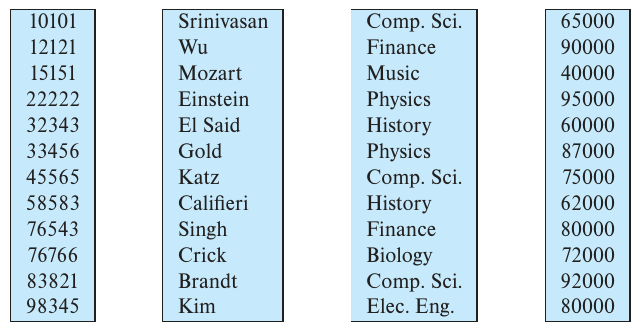
图13.14 instructor关系的列式表示。四列分别保存ID、姓名、系名和工资。
最简单的列存储形式是每个属性使用独立文件，并压缩各文件以缩小体积。本节后面还会讨论将各列连续保存在同一个文件中的更复杂方案。
如果查询需要表中第i行的完整内容，就从每列第i个位置读取相应值，再重建该行。因此，列存储的一个缺点是：取得单个元组的多个属性需要多次I/O。它不适合只从少量行中读取多个属性的查询。
但列存储适合数据分析查询，因为这类查询处理关系中的许多行，却往往只访问部分属性。原因如下。
- 减少I/O。关系有很多属性而查询只需其中少数时，无须将其余属性从磁盘读入内存。行存储则会把无关属性也一起读入。减少I/O可以显著降低查询执行成本。
- 改善CPU高速缓存性能。现代CPU中，查询处理器获取某个属性时，会将称为高速缓存行的一组连续字节从内存读入CPU缓存。之后访问这些字节，如果已在缓存中，速度就比从主存读取快得多。但相邻字节如果保存的是查询不需要的属性，把它们读入缓存就会浪费内存带宽，并占用本可保存其他数据的缓存空间。列存储没有这一问题，因为相邻字节来自同一列，而分析查询通常会依次访问这些值。
- 提高压缩效果。将相同类型的值放在一起，比压缩行格式数据更有效。行格式的相邻属性类型不同，压缩效率较低。压缩能够显著缩短磁盘读取时间，而磁盘读取往往是许多查询中成本最高的部分。如果压缩后的文件保存在内存中，也能相应减少内存占用；主存明显比磁盘昂贵，因此这一点很重要。
- 向量处理。许多现代CPU支持向量处理，可将一个CPU操作并行应用于数组中的多个元素。按列存储便于向量化执行属性与常量的比较，这对于关系的选择条件很重要。向量处理也可以同时聚合多个值，无须逐个聚合。
由于这些优势，列存储越来越多地用于以分析查询为主的数据仓库。为了获得这些性能收益，索引和查询处理技术必须经过专门设计。14.9节将概述适合列存储的位图索引和查询处理技术，24.3节提供更多细节。
采用面向列存储的数据库称为列存储数据库（column store），采用面向行存储的数据库称为行存储数据库（row store）。
列存储也有若干缺点，使其不适合事务处理。
- 元组重建成本。从各列重建元组可能很昂贵；如果需要重建很多列，成本可能抵消列式表示的收益。事务处理应用经常需要重建元组，而分析应用通常只输出数据仓库事实表众多列中的少数几列。
- 元组删除和更新成本。在压缩表示中删除或更新单条元组，需要重写与它一起压缩为一个单元的整个元组序列。事务处理经常发生更新和删除，因此如果很多元组压缩成一个单元，列存储会使这些操作成本很高。
数据仓库通常不支持更新元组，只支持插入新元组，以及一次批量删除大量旧元组。插入在关系表示的末尾进行，即向关系追加新元组。由于没有小规模删除和更新，便可将很长的属性值序列作为一个单元保存并压缩，比压缩短序列取得更好的效果。
- 解压成本。从压缩表示获取数据必须解压，最简单的压缩格式要求从文件开头读取全部数据。事务处理查询通常只需要少数记录，在这种场景中，顺序读取成本很高，因为为访问少量相关记录，可能必须解压大量无关记录。
分析查询通常访问许多连续记录，解压时间一般不会浪费。不过，即使分析查询也无须访问不满足选择条件的记录，应跳过它们的属性，以减少磁盘I/O。
为支持跳过这些属性值，列存储压缩格式允许从文件中的多个指定位置开始解压，跳过前面的内容。例如，每10000个值就重新开始一段压缩，并记录每组10000个值在文件中的起始位置。访问第i个值时，可以直接跳到第⌊i/10000⌋组的开头，从那里开始解压。
ORC和Parquet是许多大数据处理应用使用的列式文件格式。ORC将行表示转换为列表示的方法是：将占用数百MB的一段元组序列转换成称为条带（stripe）的列式表示。一个ORC文件包含多个条带，每个条带约250MB。
图13.15展示ORC格式的一些细节。每个条带先保存索引数据，再保存行数据。行数据区先保存第1列值序列的压缩表示，接着是第2列，以此类推。索引区为每个属性记录其每组例如10000个值在条带内的起始位置。7 索引可用于快速访问指定元组或元组序列。若查询含选择条件，并能判定某些组中没有任何元组满足条件，索引也允许直接跳过这些组。ORC还在条带尾部和文件尾部保存其他信息，这里不展开。
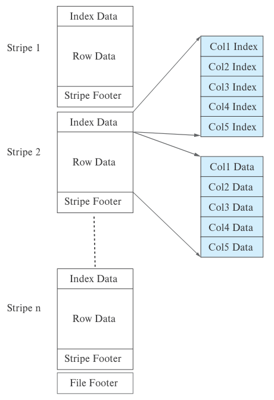
图13.15 ORC文件格式中的列式数据表示。Stripe为条带，Index Data为索引数据，Row Data为行数据，Stripe Footer为条带尾部，File Footer为文件尾部。Col1至Col5分别对应第1至第5列的数据及索引。
有些列存储系统允许把经常一起访问的一组列共同保存，无须每列使用独立文件。这样就提供了一系列选择：一端是每列单独保存的纯列存储，另一端是所有列一起保存的纯行存储。哪些属性放在一起，取决于查询负载。
即使在行存储系统中，也可以通过将关系逻辑分解为多个关系，获得列存储的部分收益。例如，将instructor分解为分别包含(ID, name)、(ID, dept_name)、(ID, salary)的三个关系。只访问姓名的查询就无须读取dept_name和salary。不过，同一ID会在三个元组中重复，占用额外空间。
有些数据库在单个磁盘块内部采用列式表示，但不压缩。8 一个块保存一组元组的全部属性。这适用于事务处理，因为取得全部属性值无须多次磁盘访问；同时，块内按列保存又能提高内存访问和缓存使用效率，也可能采用向量处理。不过，读取少数属性时，这种布局不能跳过无关磁盘块，也没有压缩收益，因此处于纯行存储与纯列存储之间。
有些数据库，例如SAP HANA，支持两种底层存储系统：面向事务处理的行存储，以及面向分析的列存储。元组通常先在行存储中创建，之后当它们不太可能再以整行方式访问时，迁移到列存储。这类系统称为行列混合存储。
还有些应用将事务数据保存到行存储中，定期例如每天一次或数次复制到数据仓库，而数据仓库可能采用列存储。
Sybase IQ是较早使用列存储的产品之一。目前已有许多研究项目和公司开发了基于列存储的数据库，包括C-Store、Vertica、MonetDB和Vectorwise等。更多资料见章末“进一步阅读”。
13.7 内存数据库的存储组织
现在，主存容量足够大、价格足够低，许多组织的数据库可以完全放入内存。可以把大量内存分配给数据库缓冲区，使整个数据库载入其中，读取数据时不再需要磁盘I/O；为保证持久性，更新后的块仍须写回磁盘。这比只有部分数据库能够放入缓冲区时性能高得多。
如果整个数据库都在内存中，还可以针对这一特点专门设计存储组织与数据结构，进一步显著提高性能。内存数据库的全部数据都驻留内存，其系统通常专门利用这一点优化性能；尤其是，它们完全取消了缓冲区管理器。
以根据记录指针访问记录的成本为例。磁盘数据库将记录保存在块中，记录指针由块标识符与块内偏移量或槽号组成。沿指针访问时，必须检查块是否在缓冲区中，通常通过内存散列索引完成；如果在，还要找到它在缓冲区中的位置；如果不在，就需要读入。这些操作会消耗相当数量的CPU周期。
内存数据库可以直接保留指向内存记录的指针，访问只需一次内存指针寻址，效率很高。只要记录不移动，就可以这样做。导致记录移动的一个原因，即载入和驱逐缓冲区，在这里已经消失。
如果仍使用块内槽页结构，删除其他记录或改变其大小时，记录可能在块内移动，无法直接指向记录，但仍可通过槽页头中的条目进行一层间接访问。为了防止其他进程读取时记录被移动，可能还需要锁住块。为避免这些开销，许多内存数据库不使用槽页结构分配记录，而直接在主存中分配，保证更新其他记录不会使其移动。不过，反复插入和删除变长记录可能产生内存碎片。数据库必须采用合理设计的内存管理方案，或者定期压紧内存，避免碎片随时间积累。压紧会移动记录，但可以无须获取块锁而执行。
主存采用列存储时，一列的全部值可以存放在连续内存位置。不过，如果向关系追加数据，为保持连续分配，就必须重新分配已有数据。为了避免这一开销，可以将一列的逻辑数组划分为多个物理数组，再用间接表保存指向各物理数组的指针，如图13.16所示。查找逻辑数组第i个元素时，先通过间接表定位包含它的物理数组，再计算适当的数组内偏移量并访问。
内存数据库还可以从其他方面优化处理，后续章节会继续介绍。
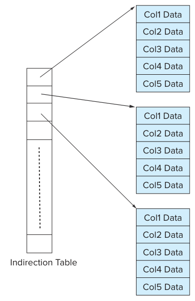
图13.16 内存中的列式数据表示。Indirection Table为间接表，Col1至Col5分别为第1至第5列数据；每列逻辑数组分成多个物理数组，通过间接表定位。
13.8 总结
- 文件可以在逻辑上组织为记录序列，再映射到磁盘块。数据库映射到文件的一种方法，是使用多个文件，每个文件只保存某一种固定长度的记录；另一种方法是允许文件容纳多种长度的记录。槽页结构广泛用于管理磁盘块内的变长记录。
- 磁盘与主存以块为单位传输数据，因此应合理地将记录分配到块，使相关记录位于同一块内。一次块访问若能取得多条所需记录，就可以减少磁盘访问。磁盘访问通常是数据库性能瓶颈，因此合理分配记录可以带来显著收益。
- 数据字典，也称系统目录，记录元数据，即关于数据的数据，包括关系名、属性名与类型、存储信息、完整性约束和用户信息。
- 减少磁盘访问的一种办法，是将尽可能多的块保留在主存中。由于不能保存全部块，需要管理用于存放块的可用内存。缓冲区是主存中用于保存磁盘块副本的部分，负责分配缓冲空间的子系统称为缓冲区管理器。
- 列存储系统能够为许多数据仓库应用提供良好性能。
复习术语
- 文件组织
- 文件
- 块
- 定长记录
- 文件头
- 空闲链表
- 变长记录
- 空值位图
- 槽页结构
- 大对象
- 记录组织
- 堆文件组织
- 顺序文件组织
- 多表聚簇文件组织
- B⁺树文件组织
- 散列文件组织
- 空闲空间映射
- 顺序文件
- 搜索码
- 聚簇码
- 表分区
- 数据字典存储
- 元数据
- 数据字典
- 系统目录
- 数据库缓冲区
- 缓冲区管理器
- 固定的块
- 被驱逐的块
- 块的强制输出
- 共享锁与排他锁
- 缓冲区替换策略
- 最近最少使用（LRU）
- 立即丢弃
- 最近使用（MRU）
- 块的输出
- 块的强制输出
- 日志磁盘
- 日志文件系统
- 面向列的存储
- 列式存储
- 向量处理
- 列存储数据库
- 行存储数据库
- 条带
- 行列混合存储
- 内存数据库
实践练习
13.1 考虑从图13.3的文件中删除记录5。比较以下删除方法各自的优缺点：
a. 将记录6移入记录5的位置，再将记录7移入记录6的位置。
b. 将记录7移入记录5的位置。
c. 将记录5标记为已删除，不移动任何记录。
13.2 对图13.4的文件依次执行下列步骤，画出每一步之后的文件结构：
a. 插入(24556, Turnamian, Finance, 98000)。
b. 删除记录2。
c. 插入(34556, Thompson, Music, 67000)。
13.3 考虑section和takes关系。给出这两个关系的一个实例，包含3个教学班，每班有5名学生，再给出采用多表聚簇的文件结构。
13.4 考虑空闲空间映射的位图表示，每个文件块在位图中对应2个比特。块的占用率为0%到30%时，值为00；30%到60%时为01；60%到90%时为10；高于90%时为11。即使文件很大，这种位图也可以放入内存。
a. 与本章前面每块使用1字节的方法相比，每块使用2比特有什么优点和缺点？分别列出两个优点和一个缺点。
b. 描述记录插入和删除时如何更新位图。
c. 与空闲链表相比，位图方法在寻找空闲空间和更新空闲信息方面有什么优势？
13.5 快速判断某个块是否在缓冲区中，以及位于缓冲区何处，十分重要。数据库缓冲区很大，应使用哪种内存数据结构完成这项任务？
13.6 假设大学经过多年积累，已有大量takes记录。说明如何对takes进行表分区，可以带来什么好处，并指出一个可能的缺点。
13.7 分别为下列情况给出一个关系代数表达式和一种查询处理策略：
a. MRU优于LRU。
b. LRU优于MRU。
13.8 PostgreSQL通常使用较小的缓冲区，将其余可用于文件系统缓冲的主存交给操作系统缓冲区管理器管理。说明：（a）这种方法有什么好处；（b）它的一个主要限制是什么。
习题
13.9 变长记录使用空值位图表示属性是否为null。
a. 对于变长字段，如果值为null，偏移量和长度字段中应保存什么？
b. 有些应用的元组包含很多属性，其中大多数为null。能否修改记录表示，使null属性的唯一开销就是空值位图中的1比特？
13.10 解释为什么将记录分配到块的方式会显著影响数据库系统性能。
13.11 对以下关系数据库存储策略，各列出两个优点和两个缺点：
a. 每个关系存入一个文件。
b. 多个关系，甚至整个数据库，存入一个文件。
13.12 顺序文件组织中，即使当前只有一条溢出记录，为什么仍要使用溢出块？
13.13 给出Index_metadata关系的一个规范化版本，并解释为什么使用该版本会降低性能。
13.14 标准缓冲区管理器假设所有块大小相同、读取成本相同。考虑一种不用LRU、改为根据对象访问频率，即过去n秒访问次数，进行管理的方案。假设需要缓冲的对象大小不同、读取成本也不同，例如网页的读取成本取决于来源站点。提出一种让管理器选择驱逐哪个块的方法。
进一步阅读
[Hennessy et al. (2017)]是广受使用的计算机体系结构教材，包含地址转换后备缓冲器（TLB）、高速缓存和内存管理单元的硬件内容。
IBM DB2、Oracle、Microsoft SQL Server、PostgreSQL等具体数据库系统的存储结构，可查阅各自在线提供的系统手册。
[Chou and Dewitt (1985)]介绍数据库缓冲区管理算法并进行了性能评估。大多数操作系统教材都讨论操作系统的缓冲区管理，包括[Silberschatz et al. (2018)]。
[Abadi et al. (2008)]比较了列存储与行存储，包括查询处理和优化方面的问题。
Sybase IQ于20世纪90年代中期开发，是第一个取得商业成功、面向分析的列存储数据库。MonetDB和C-Store源自学术研究项目；商业数据库Vertica由C-Store发展而来，VectorWise则由MonetDB发展而来。正如名称所示，VectorWise支持向量化数据处理，使许多分析查询能够获得很高的处理速率。[Stonebraker et al. (2005)]介绍C-Store，[Idreos et al. (2012)]概述MonetDB项目，[Zukowski et al. (2012)]介绍Vectorwise。
ORC和Parquet列式文件格式，为运行于Apache Hadoop平台的大数据应用提供压缩数据存储支持。
参考文献
[Abadi et al. (2008)] D. J. Abadi, S. Madden, and N. Hachem, “Column-Stores vs. Row-Stores: How Different Are They Really?”, In Proc. of the ACM SIGMOD Conf. on Management of Data (2008), pages 967–980.
题名译文：《列存储与行存储：它们究竟有何不同？》。
[Chou and Dewitt (1985)] H. T. Chou and D. J. Dewitt, “An Evaluation of Buffer Management Strategies for Relational Database Systems”, In Proc. of the International Conf. on Very Large Databases (1985), pages 127–141.
题名译文：《关系数据库系统缓冲区管理策略评估》。
[Hennessy et al. (2017)] J. L. Hennessy, D. A. Patterson, and D. Goldberg, Computer Architecture: A Quantitative Approach, 6th edition, Morgan Kaufmann (2017).
题名译文：《计算机体系结构：量化研究方法》，第6版。
[Idreos et al. (2012)] S. Idreos, F. Groffen, N. Nes, S. Manegold, K. S. Mullender, and M. L. Kersten, “MonetDB: Two Decades of Research in Column-oriented Database Architectures”, IEEE Data Engineering Bulletin, Volume 35, Number 1 (2012), pages 40–45.
题名译文：《MonetDB：列式数据库体系结构研究二十年》。
[Silberschatz et al. (2018)] A. Silberschatz, P. B. Galvin, and G. Gagne, Operating System Concepts, 10th edition, John Wiley and Sons (2018).
题名译文：《操作系统概念》，第10版。
[Stonebraker et al. (2005)] M. Stonebraker, D. J. Abadi, A. Batkin, X. Chen, M. Cherniack, M. Ferreira, E. Lau, A. Lin, S. Madden, E. J. O’Neil, P. E. O’Neil, A. Rasin, N. Tran, and S. B. Zdonik, “C-Store: A Column-oriented DBMS”, In Proc. of the International Conf. on Very Large Databases (2005), pages 553–564.
题名译文：《C-Store：一种面向列的数据库管理系统》。
[Zukowski et al. (2012)] M. Zukowski, M. van de Wiel, and P. A. Boncz, “Vectorwise: A Vectorized Analytical DBMS”, In Proc. of the International Conf. on Data Engineering (2012), pages 1349–1350.
题名译文：《Vectorwise：向量化分析型数据库管理系统》。
图片出处
章首帆船照片：©Pavel Nesvadba/Shutterstock。
-
为稳妥起见，不仅当前数据库应能放入内存，还应合理确信：即使组织可能发展壮大，数据库在中期未来仍能放入内存。 ↩
-
这里“页”与“块”同义。 ↩
-
这一限制有助于简化缓冲区管理。13.5节将说明，访问磁盘块前需要先将其读入称为缓冲区的内存区域。大于一个块的记录会被分到不同块中，而这些块可能位于缓冲区的不同位置，无法保证记录占用连续内存。 ↩
-
记录偶尔也会移动，例如数据库对关系中的记录排序时。即使排序使关系重新有序，后续插入和更新仍可能使记录再次失去顺序。 ↩
-
通过13.5节介绍的数据库缓冲区读入。 ↩
-
cluster也常用于表示共同组成并行数据库的一组机器，即集群。该含义与这里的多表聚簇无关。 ↩
-
ORC文件还包含其他信息，这里省略。 ↩
-
磁盘块中的数据也可以压缩，但访问时必须解压，而解压后的数据可能无法再放入一个块。为处理这些问题，必须显著修改包括缓冲区管理在内的数据库代码。 ↩